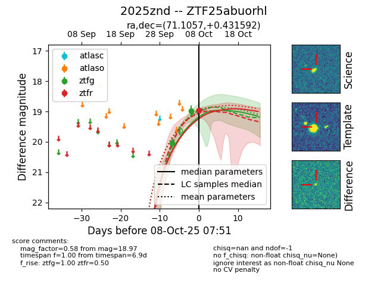
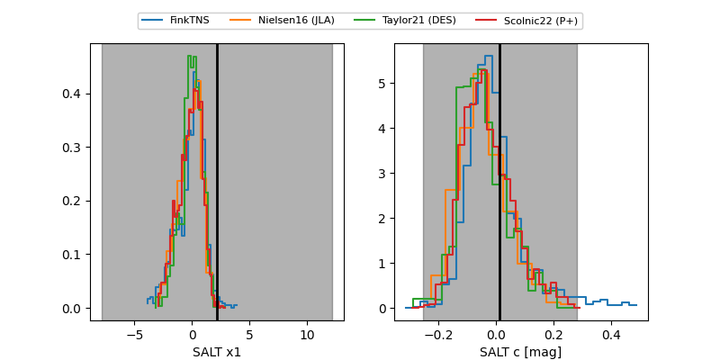

FINK: ZTF25abuorhl
Lasair: ZTF25abuorhl
ALeRCE: ZTF25abuorhl
TNS: 2025znd
YSE: 2025znd
ZTF25abuorhl (ztf,fink)
2025znd (tns,yse)
equatorial (ra, dec) = (71.1057,+0.43159)
galactic (l, b) = (196.7546,-27.70543)


last ztfg=18.99, ztfr=18.97
2 ztfg, 1 ztfr detections